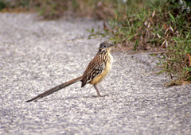

Correcaminos Tropical (Geococcyx velox)

Descripción
Su plumaje es de color castaño claro o grisáceo con negro, lo que le provee un camuflaje adecuado para su ambiente. Tiene largas patas, que le permiten alcanzar altas velocidades.
Distribución y hábitat
Su área de distribución incluye Nicaragua, Honduras, El Salvador, Guatemala, el suroeste de México y el lado oeste de la Sierra Madre Occidental.Se reportan ocasionales avistamientos en el norte de Costa Rica.
Su hábitat incluye matorrales tropicales y subtropicales.
Comportamiento
Se alimenta principalmente de insectos, lagartos y pequeñas serpientes, utilizando su velocidad para perseguirlos.
Caracteristicas
- Su nombre común, “correcaminos”, proviene de su hábito de correr en frente de vehículos en movimiento, y luego refugiarse en los matorrales que bordean los caminos.
- El correcaminos tropical se parece al correcaminos norteño (Geococcyx californianus), tanto en apariencia como en hábitos, aunque es algo más pequeño (aproximadamente 46 cm) y tiene un pico más corto.
- Su larga cola le sirve de timón al correr y le permite hacer giros rápidos.
- En México hay una población disyuntiva en el norte de la Península de Yucatán.
- La UICN2019-1 considera a la especie como de preocupación menor.
Haz click aqui para volver a la tabla